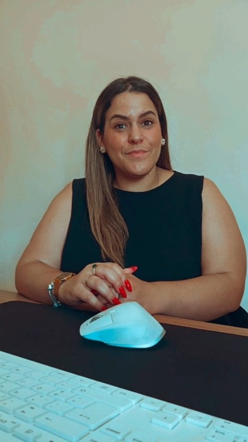

Um gabinete pensado para lhe simplificar a vida fiscal.A practice designed to simplify your tax life.
Somos um gabinete de contabilidade sediado em Coimbra, especializado no acompanhamento de pequenas e médias empresas, empresários em nome individual e trabalhadores independentes.We are an accounting practice based in Coimbra, specialised in supporting SMEs, sole traders and freelancers.

A minha históriaMy story
Chamo-me Liliana Nunes e sou Contabilista Certificada inscrita na Ordem dos Contabilistas Certificados (OCC). Ao longo de anos a trabalhar com empresas de diferentes dimensões e sectores, aprendi que a contabilidade é muito mais do que preencher declarações: é um instrumento de decisão que, bem utilizado, protege o património do empresário.
My name is Liliana Nunes and I am a Certified Accountant registered with the Portuguese Order of Certified Accountants (OCC). After years working with businesses of different sizes and sectors, I learned that accounting is more than filing returns: used well, it is a decision tool that protects the entrepreneur’s assets.
Foi essa convicção que me levou a criar o meu próprio gabinete em Coimbra — um espaço próximo, sem intermediários, onde cada cliente é acompanhado com o rigor de um técnico e o cuidado de quem entende o peso de gerir um negócio.
That conviction led me to open my own practice in Coimbra — a close, direct space where every client is supported with technical rigor and the care of someone who understands the weight of running a business.
A forma como trabalhamosHow we work
Acreditamos que uma boa contabilidade nasce de três princípios: organização documental, comunicação constante e antecipação de prazos. É por isso que todos os clientes recebem um calendário fiscal personalizado, lembretes atempados e um interlocutor dedicado que conhece a sua atividade em detalhe.
We believe good accounting rests on three principles: document organisation, constant communication and ahead-of-time deadlines. That is why every client receives a personalised tax calendar, timely reminders and a dedicated contact who knows their activity in detail.
Utilizamos plataformas seguras para partilha de documentos e assinatura eletrónica, o que permite colaborar connosco a partir de qualquer ponto do país — mantendo o rigor e a proximidade que caracterizam o nosso serviço.
We use secure platforms for document sharing and e-signature, so you can work with us from anywhere in the country — without losing the rigor and proximity that define our service.
Valores que nos definemValues that define us
- TransparênciaHonorários claros, sem custos escondidos e sempre acordados antes do início da colaboração.
- TransparencyClear fees, no hidden costs, always agreed before we start working together.
- ConfidencialidadeToda a informação partilhada é tratada ao abrigo do sigilo profissional e do RGPD.
- ConfidentialityAll shared information is protected under professional secrecy and GDPR.
- Atualização permanenteAcompanhamos alterações legislativas para garantir que está sempre em conformidade.
- Continuous updatesWe track legislative changes so you stay compliant.
- Foco no clienteCada resposta é adaptada à realidade concreta do seu negócio.
- Client focusEvery answer is tailored to the reality of your business.
Quer conhecer-nos melhor?Want to get to know us better?
Marque uma reunião inicial gratuita — presencial em Coimbra ou por videochamada.Book a free introductory meeting — in Coimbra or by video call.
Agendar por WhatsApp